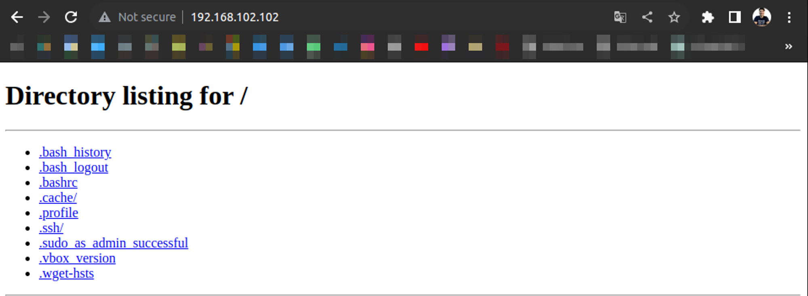

Anexo
Semantic Releases
¿Qué es una ‘release’?
Una release es empaquetar cualquier cambio en el código y enviarlo a producción. Por ejemplo, un cambio de nuestra página web que vaya al público y no a nuestra etapa de desarrollo.
El manejo de estas releases puede ser un poco complicado, especialmente si no seguimos un cierto standard. Por eso es que usamos ‘semantic versioning’ con git tags para manejar de manera fácil nuestras releases.
¿Qué es el ‘semantic versioning’?
El semantic versioning es sólo un esqueman numérico, es una práctica estándar de la industria del software que sirve para indicar el “grado de cambios” que se han hecho desde la release de producción anterior. Todos usan semantic versioning, desde Git, hasta Firefox y los SO como iOS.
¿Qué estructura tiene la semantic versioning?
Tiene 3 partes:
Cada una de las partes indica algo diferente cuando incrementa:
-
Major: Cuando vamos de 1.0.0 a 2.0.0 indicamos que cambiamos de manera disruptiva, incluimos cambios que no sean compatibles hacia atrás, etc. Por ejemplo, remover código que ya no sirve para incluir una reestructuración completa de la arquitectura de nuestra aplicación.
-
Minor: Cuando vamos de 1.0.1 a 1.1.0 indicamos que cambiamos funcionalidades, pero que estos cambios son compatibles hacia atrás. Puede ser el cambio de una funcionalidad, la actualización de una, el agregado de otra.
-
Patch: Cuando vamos de 1.0.1 a 1.0.2 indicamos arreglos de bugs y actualizaciones triviales.
Premisas del semantic versioning
- Una vez hecha una release, la versión no puede ser cambiada
- Si nos olvidamos algo no podemos “retaggear” una versión, estos deberían entrar en una nueva release.
- Somos responsables de checkear reiteradamente la versión actual antes de hacer un release.
Git Tagging ¿Qué es un Tag?
Es una manera de agregar un marcador o marker a un commit para indicar que es importante de alguna manera en nuestro repositorio. Hay dos diferentes tipos de GitTags:
-
Lightweigh tags: Un puntero con nombre básico para un commit.
-
Annotated tags: Un objeto completo en la database de git verificado, contiene información de el tag, tiene un mensaje de taggeo (tagging message) y puede ser firmada y verificada con GNU Privacy Guard (GPG). Esta última es la que se recomienda usar.
Tanto el semantic versioning como el GitTagging van de la mano, podemos agregar un commit taggeando la versión correspondiente.
Semantic versioning + Annotated Tags = Semantic Releases
Nos permite tener commits marcados en nuestro repositorio de git con una versión específica. Los beneficios de esto en un repositorio de git son:
- Le da significado a los cambios importantes en nuestro repositorio.
- Comunica el “grado de cambio” entre los diferentes tags.
- Vemos de manera directa el historial de tracking de los cambios realizados.
¿Por qué plataformas o herramientas está soportado esto?
- Diferentes interfaces de Git, como Git Kraken o GitHub Desktop.
- Diferentes herramientas de automatización como Circle CI, Bitbucket, Travis, etc.
¿Cómo creo las 'Semantic Git Releases'?
Es un proceso que consiste en 3 pasos:
- Crear un annotated tag
- Usar semantic versioning para el nombre del tag
- Brindar una annotation
- Pushear el tag al repositorio remoto
- Insertar los pasos de deployment acá
Crear una un semantic release tag usando la consola:
Release Notes
Tenemos que evitar las anotaciones mínimas. Se recomienda, para cada tipo de release:
- Patch: Lista de los bug fixes
- Minor: Lista de cambios, detalles de uso.
- Major: Lista de elementos removidos, lista de cosas agregadas, proceso de actualización.
Tomar una lista de los mensajes de los commits entre releases:
git log --pretty=format:%s <last release>... HEAD --no-merges
git tag -a <tag-name> -m"$(git log --pretty=format:%s <last release>... HEAD --no-merges)"
¿Cómo automatizo la generación de los tags?
- Puedo buscar en el mercado por alguna herramienta de automatización.
- Crear un script de bash por nosotros mismos para ayudarnos a automatizar los pasos repetitivos.
Git Workflow
Los Git Workflows son metodologías de trabajo para los usuarios de de Git.
Git Flow
Es el workflow más conocido, basado en dos branches principales que son perpetuas, con vida infinita. Estas son:
- master: Tiene el código de producción. Todo el código de desarrollo es ‘mergeado’ dentro de la branch master en algún momento.
- develop: Contiene el código de pre-producción. Cuando las modificacioens o nuevas características estén finalizadas, se ‘mergean’ en la branch develop.
Durante el ciclo de desarrollo, una variedad de ramas de soporte son utilizadas:
- feature-*: Usada para desarrollar nuevas caracterísitcas que vendrán en las futuras releases. Debería desprenderse de la rama develop y mergearse en la rama develop.
- hotfix-: Son necesarias para actuar inmediatamente ante un estado indeseado de la branch master. Debería desprenderse de la branch master y mergearse tanto en máster como en develop.
- release-*: Son la preparación de una nueva release de producción. Permiten que haya menos bugs que arreglar y la preparación de la metadata para la release. Debe desprenderse de la rama develop y debe ser mergeada en la rama master y develop.
GitHub Flow
Es un workflow liviano creado por GitHub y se basa en 6 principios:
- Todo en la rama master es deployable.
- Para trabajar en algo nuevo, creamos una rama desde la master con un nombre descriptivo.
- Hacemos commit a esa rama localmente y regularmente hacemos push del trabajo a la misma rama en remoto.
- Cuando necesitamos feedback o creemos que es necesario mergear, abrimos un Pull Request (PR).
- Despues de que alguien haya revisado y firmado la nueva característica, se puede hacer merge en la master.
- Una vez hecho el merge y pusheado a la rama master, debemos deployar inmediatamente.
GitLab Flow
Es un workflow creado por GitLab. Combina un desarrollo dirigido por las funcionalidades (caracteristicas) y con ramas de funcionalidades con un trackeo de problemas.
La mayor diferencia con GitHub Flow es el ambiente de las ramas que tenemos en GitLab Flow (staging y production) porque será un proyecto que no puede deployarse en producción cada vez que hacemos un merge de una nueva feature branch. Se basa en 11 principios:
- Usa feature branches, no commits directos a master.
- Prueba todos los commits, no solo los de la master.
- Corre todos los test en todos los commits.
- Hacer revisión de codigo antes de hacer el merge en master.
- Los deployments son automáticos, basados en las branches o tags.
- Los tags son configurados por el usuario, no por el CI.
- Las releases son basadas en tags.
- Los commits ya pusheados nunca son rebasados.
- Todos comienzan por master y apuntan a master.
- Corregir bugs en master primero, release branches segundo.
- Los commits reflejan la intención.
¿Cual elegimos?
Por simplicidad y por la plataforma en la que estamos trabajando el workflow más conveniente será GitHub Workflow.
Metodologías ágiles
Manifiesto ágil
El Manifiesto Ágil es un documento que establece los valores y principios fundamentales para el desarrollo ágil de software. Fue creado en 2001 por un grupo de expertos en desarrollo de software que buscaban alternativas más flexibles y eficientes a los enfoques tradicionales de gestión de proyectos.
Valores del Manifiesto Ágil
- Individuos e interacciones sobre procesos y herramientas: Se enfoca en la importancia de las personas y la comunicación efectiva en el desarrollo de software.
- Software funcionando sobre documentación extensiva: Prioriza la entrega de software funcional y utilizable por encima de una documentación exhaustiva.
- Colaboración con el cliente sobre negociación contractual: Destaca la importancia de la colaboración continua con el cliente para adaptarse a los cambios y requisitos emergentes.
- Responder a cambios sobre seguir un plan: Aboga por la flexibilidad y la capacidad de adaptarse a cambios en los requisitos, incluso en etapas avanzadas del desarrollo.
Principios del Manifiesto Ágil
- La más alta prioridad es satisfacer al cliente mediante la entrega temprana y continua de software valioso.
- Aceptar cambios en los requisitos, incluso en etapas tardías del desarrollo.
- Entregar software funcional con frecuencia, con preferencia a intervalos cortos.
- Colaborar con clientes y usuarios a lo largo del proyecto.
- Construir proyectos alrededor de individuos motivados, dándoles el entorno y el apoyo que necesitan y confiando en ellos para que hagan el trabajo.
- El método más eficiente y efectivo de comunicación es la conversación cara a cara.
- El software funcional es la principal medida de progreso.**
- Mantenerte enfocado en la simplicidad, maximizando la cantidad de trabajo no realizado.
- Las mejores arquitecturas, requisitos y diseños surgen de equipos autoorganizados.
- A intervalos regulares, el equipo reflexiona sobre cómo ser más efectivo y ajusta su comportamiento en consecuencia.
Hoy en día, el Manifiesto Ágil sigue siendo un marco de referencia influyente para el desarrollo de software. Las metodologías ágiles como Scrum, Kanban y XP (eXtreme Programming) se basan en estos valores y principios. Las organizaciones adoptan enfoques ágiles para mejorar la flexibilidad, la capacidad de respuesta a cambios y la entrega continua de software de alta calidad. Además, la cultura ágil ha trascendido el ámbito del desarrollo de software y se ha extendido a otras áreas como la gestión de proyectos, el marketing y la gestión empresarial.
Scrum: Roles y responsabilidades
Scrum es un marco de trabajo ágil que se utiliza comúnmente en el desarrollo de software para gestionar proyectos de manera iterativa e incremental. Los roles en Scrum son esenciales para la colaboración y la entrega efectiva de productos. Los roles principales en Scrum y sus responsabilidades son:
- Product Owner (Dueño del Producto):
- Responsabilidades:
- Define la visión del producto.
- Prioriza el backlog del producto.
- Asegura que el equipo esté trabajando en las características más valiosas y prioritarias.
- Toma decisiones sobre el alcance y las características del producto.
- Responsabilidades:
- Scrum Master (Facilitador del Proceso):
- Responsabilidades:
- Garantiza que el equipo Scrum siga las prácticas y reglas de Scrum.
- Facilita las reuniones del equipo, como las reuniones de planificación, revisión y retrospectiva.
- Elimina los obstáculos que impiden el progreso del equipo.
- Ayuda a mantener un entorno de trabajo colaborativo y centrado en la entrega de valor.
- Responsabilidades:
- Equipo de Desarrollo:
- Responsabilidades:
- Desarrolla el producto durante los sprints.
- Colabora en la planificación del sprint y define las tareas necesarias.
- Se autoorganiza para lograr los objetivos del sprint.
- Participa en las ceremonias de Scrum, como las reuniones diarias de scrum, la revisión y la retrospectiva.
- Responsabilidades:
Es importante destacar que en Scrum, se fomenta la colaboración y la autogestión del equipo. El Product Owner y el Scrum Master sirven al equipo y trabajan en conjunto para asegurar que el producto se desarrolle de manera efectiva y que se cumplan los objetivos del negocio. Además, Scrum promueve la transparencia, la inspección y la adaptación continua, lo que permite a los equipos responder rápidamente a los cambios en los requisitos o en el entorno del proyecto.
En Scrum, tanto el "Backlog" como el "Sprint" son conceptos fundamentales que contribuyen al enfoque iterativo e incremental del desarrollo de software.
-
Backlog:
El "Product Backlog" (Backlog del Producto) es una lista dinámica y priorizada de todas las funcionalidades, mejoras y tareas que podrían ser realizadas para un producto. Es responsabilidad del Product Owner mantener y gestionar este backlog. Algunas características del Product Backlog incluyen:
- Priorización: Las ítems del backlog están ordenados por prioridad, con las características más importantes o de mayor valor para el cliente en la parte superior.
- Flexibilidad: El backlog es flexible y puede cambiar con el tiempo para adaptarse a las necesidades cambiantes del negocio o del cliente.
- Detalles: Los elementos del backlog no necesitan estar detallados en exceso. Los detalles se refinan a medida que los elementos se acercan al tope del backlog y se preparan para ser incluidos en un sprint.
- Sprint:
Un "Sprint" es una unidad de tiempo fija y corta durante la cual se realiza un trabajo específico y se produce una versión potencialmente entregable del producto. Los sprints en Scrum generalmente tienen una duración de dos a cuatro semanas. Algunas características clave del Sprint incluyen:
- Objetivo del Sprint: Antes de comenzar un Sprint, el equipo selecciona elementos del Product Backlog para incluir en el Sprint Backlog, que es la lista de elementos que se comprometen a completar durante el sprint.
- Iterativo e Incremental: El trabajo se realiza en ciclos iterativos, y al final de cada Sprint, se produce un incremento potencialmente entregable del producto.
- Reuniones: Durante el sprint, el equipo se reúne diariamente en la "Daily Scrum" para revisar el progreso y planificar el trabajo del día.
- Revisión y Retrospectiva: Al final del Sprint, se llevan a cabo la "Sprint Review" para presentar el trabajo completado y obtener retroalimentación, y la "Sprint Retrospective" para analizar el proceso y mejorar en futuros sprints.
La combinación del Backlog y los Sprints permite a los equipos Scrum mantener un enfoque ágil y responder rápidamente a los cambios en los requisitos del cliente o del negocio, al tiempo que entrega de manera regular incrementos de valor al producto.
Para nuestro caso, el tutor docente actuaría como Scrum Master, el tutor externo actuaría de Product Owner y el equipo de desarrollo estaría conformado por el alumno. Además hemos definido los sprints de una semana, y tomaremos tareas del backlog que se ha conformado a partir del plan de trabajo de esta PPS.
Cultura DevOps
La cultura DevOps es una filosofía y práctica que promueve la colaboración estrecha y continua entre los equipos de desarrollo (Dev) y operaciones (Ops) en el ciclo de vida del desarrollo de software. El objetivo principal es superar las barreras tradicionales entre estos dos departamentos para lograr una entrega de software más rápida, eficiente y confiable.
Principios y Valores de la Cultura DevOps
- Colaboración y Comunicación:
- Principio: Fomentar la colaboración abierta y una comunicación efectiva entre los equipos de desarrollo y operaciones.
- Automatización:
- Principio: Automatizar tanto como sea posible los procesos de desarrollo, prueba y despliegue para mejorar la eficiencia y reducir errores.
- Entrega Continua:
- Principio: Buscar la entrega continua de software, permitiendo versiones pequeñas y frecuentes en lugar de despliegues masivos y menos frecuentes.
- Monitoreo y Retroalimentación:
- Principio: Implementar sistemas de monitoreo para obtener retroalimentación rápida sobre el rendimiento y la calidad del software en producción.
- Responsabilidad Compartida:
- Principio: Fomentar una mentalidad de responsabilidad compartida entre los equipos de desarrollo y operaciones en todo el ciclo de vida del software.
Cómo se utiliza hoy en día
La cultura DevOps se implementa mediante la adopción de prácticas y herramientas específicas, como:
- Despliegue Continuo (Continuous Deployment): Automatización del proceso de liberación de software para que nuevas versiones puedan ser implementadas de manera rápida y segura.
- Infraestructura como Código (Infrastructure as Code - IaC): Definir y gestionar la infraestructura de manera automatizada, tratándola como código, lo que facilita la reproducibilidad y escalabilidad.
- Integración Continua (Continuous Integration): Integrar el código de los desarrolladores en un repositorio compartido varias veces al día, lo que facilita la detección temprana de errores.
- Monitoreo Continuo y Análisis de Logs: Utilizar herramientas para monitorear el rendimiento en tiempo real y analizar los registros para identificar problemas y áreas de mejora.
A modo de síntesis, la cultura DevOps busca mejorar la colaboración, eficiencia y velocidad en el desarrollo y despliegue de software, y se apoya en la automatización, la entrega continua y la responsabilidad compartida entre los equipos de desarrollo y operaciones.
Objetivos SMART
Los objetivos SMART son una metodología utilizada para establecer metas y objetivos de manera clara y específica. El acrónimo SMART representa los criterios que deben cumplir estos objetivos:
- Específicos (Specific): Los objetivos deben ser claros y específicos, evitando ambigüedades y definiciones vagas.
- Medibles (Measurable): Deben incluir criterios cuantificables para evaluar el progreso y determinar cuándo se ha alcanzado el objetivo.
- Alcanzables (Achievable): Los objetivos deben ser realistas y alcanzables dentro del contexto y recursos disponibles.
- Relevantes (Relevant): Deben estar alineados con los objetivos generales y estratégicos de la organización.
- Temporizables (Time-bound): Deben tener un plazo o período de tiempo específico para su cumplimiento.
Relacionando los objetivos SMART con Scrum en el contexto de Backlog, Sprint o Tarea:
- Backlog: Los elementos del Product Backlog en Scrum se benefician al ser definidos de manera SMART. Cada elemento debe ser específico en cuanto a su funcionalidad, medible en términos de valor para el usuario, alcanzable dentro del alcance del proyecto, relevante para los objetivos del producto y con un plazo temporal definido.
- Sprint: Los objetivos de cada Sprint, establecidos durante la planificación del Sprint, también pueden seguir la metodología SMART. Al ser específicos, medibles, alcanzables, relevantes y temporizables, estos objetivos guiarán el trabajo del equipo durante el Sprint.
- Tarea: Incluso a nivel de tareas individuales dentro de un Sprint, la aplicación de la metodología SMART puede ser útil. Cada tarea puede ser definida de manera específica, medible en términos de esfuerzo o resultados, alcanzable para un miembro del equipo, relevante para los objetivos del Sprint y con un plazo temporal asignado.
La aplicación de objetivos SMART en Scrum contribuye a una mayor claridad, enfoque y medición del progreso en el desarrollo de software, alineando los esfuerzos del equipo con metas claras y alcanzables.
A modo de síntesis
Las metodologías ágiles, encabezadas por el Manifiesto Ágil, han transformado la forma en que se aborda el desarrollo de software al promover valores como la flexibilidad, la colaboración y la entrega continua de valor al cliente. SCRUM, una de las metodologías ágiles más populares, opera bajo los principios del Manifiesto Ágil y estructura el desarrollo en sprints, con roles claramente definidos y un enfoque en la transparencia y adaptabilidad. La cultura DevOps, por otro lado, se alinea con los principios ágiles al fomentar la colaboración estrecha entre los equipos de desarrollo y operaciones, buscando la automatización y la entrega continua. En este contexto, los objetivos SMART se integran como una metodología clave para establecer metas claras, medibles y alcanzables, proporcionando un marco estructurado que puede aplicarse tanto a la gestión del backlog en SCRUM como a los objetivos específicos de cada sprint. La combinación de metodologías ágiles, SCRUM, la cultura DevOps y objetivos SMART crea un entorno de desarrollo flexible, colaborativo y orientado a resultados, permitiendo a los equipos adaptarse rápidamente a los cambios, mejorar continuamente y cumplir con los objetivos estratégicos de la organización.
Vagrant
Vagrant es una herramienta que podés usar para crear y gestionar entornos de desarrollo virtualizados de manera fácil y reproducible. Su uso típico es facilitar la creación de máquinas virtuales con configuraciones específicas para el desarrollo de proyectos.
Para comenzar un proyecto de Vagrant en el directorio /vagrant, el usuario puede seguir estos pasos:
- Instalación de Vagrant: Antes que nada, necesitás instalar Vagrant en tu máquina. Esto se puede hacer descargando el instalador desde el sitio oficial y siguiendo las instrucciones.
- Creación de un archivo Vagrantfile:
En el directorio donde querés iniciar el proyecto, creá un archivo llamado
Vagrantfile. Este archivo contendrá la configuración de la máquina virtual, como el sistema operativo, la cantidad de memoria RAM, etc. - Configuración del Vagrantfile: Dentro del Vagrantfile, especificá la configuración deseada. Por ejemplo, podés elegir un sistema operativo base, asignar recursos como CPU y RAM, y configurar la red.
- Inicialización de la máquina virtual:
Ejecutá el comando
vagrant upen el directorio donde se encuentra el Vagrantfile. Este comando creará y provisionará la máquina virtual según la configuración especificada. - Acceso a la máquina virtual:
Utilizá el comando
vagrant sshpara acceder a la máquina virtual recién creada. Esto abrirá una conexión SSH a la máquina virtual.
Algunas ventajas clave de utilizar Vagrant para levantar múltiples entornos de desarrollo son:
- Reproducibilidad: Con Vagrant, se puede garantizar que todos los miembros del equipo tengan exactamente el mismo entorno de desarrollo, evitando problemas de compatibilidad.
- Portabilidad: Los entornos Vagrant son independientes de la máquina host, lo que significa que podés compartir el mismo entorno de desarrollo en diferentes sistemas operativos.
- Aislamiento: Cada proyecto puede tener su propio entorno virtualizado, evitando conflictos entre dependencias y facilitando la gestión de versiones de software.
- Eficiencia en el uso de recursos: Vagrant permite ejecutar varias máquinas virtuales de manera eficiente, lo que es útil para simular entornos complejos, como redes privadas virtuales (VPNs) o arquitecturas de microservicios.
Ejemplo de una Vagrantfile
Crearemos un entorno de 3 máquinas, una master y 2 nodos a los cuales les aplicaremos configuraciones generales y particulares a cad auno. Importante aclarar que usaremos una imagen distinta a la vista antes, en este caso será ubuntu/trusty64.
¡Importante! Para poder configurar cierta red privada deberemos crear o modificar el archivo /etc/vbox/networks.conf añadiendo la red de la siguiente manera:
Primero vamos a crear las claves públicas y privadas para las conexiones SSH:
Creamos nuestra propia clave pública y privada con ssh-keygen, procuramos no poner passphrase para que no se la solicite a las VMs a la hora de iniciarlas.
# ~/.ssh/
> ssh-keygen -t rsa -b 4096
Generating public/private rsa key pair.
Enter file in which to save the key (/home/aagustin/.ssh/id_rsa): vagrant_key
Enter passphrase (empty for no passphrase):
Enter same passphrase again:
Your identification has been saved in vagrant_key
Your public key has been saved in vagrant_key.pub
The key fingerprint is:
SHA256:K4v2o7EKOLfjCMLk7zVD4v234234c06peueU aagustin@hp-agustin
The key's randomart image is:
+---[RSA 4096]----+
| |
| |
| |
| |
| . . . .S . |
|= . 3 o .. o.. |
|*o.+.*.... +.++. |
|o=o.B4== . *++ |
|..=*+*=++ .+o. E |
+----[SHA256]-----+
Ahora si, escribimos el archivo Vagrantfile:
# -*- mode: ruby -*-
# vi: set ft=ruby :
# All Vagrant configuration is done below. The "2" in Vagrant.configure
# configures the configuration version (we support older styles for
# backwards compatibility). Please don't change it unless you know what
# you're doing.
Vagrant.configure("2") do |config|
# Image configuration (for all vm's)
config.vm.box = "bento/ubuntu-22.04"
config.vm.box_version = "202309.08.0"
# SSH (for all vm's)
config.ssh.insert_key = false
config.ssh.forward_agent = true
config.ssh.private_key_path = ["/home/aagustin/.vagrant.d/insecure_private_key","/home/aagustin/.ssh/vagrant_key"]
config.vm.provision "file", source: "/home/aagustin/.ssh/vagrant_key.pub", destination: "/home/vagrant/.ssh/authorized_keys"
# Declaring master node and defining it like a primary machine
config.vm.define "master", primary: true do |master|
# Resources (provider)
master.vm.provider "virtualbox" do |vb|
vb.gui = false
vb.name = "trusty64-master"
vb.memory = "2048"
vb.cpus = "2"
end
# Configure synced folder
#config.vm.synced_folder "~/my-loc/vagrant/synced/folders/master/", "/home/vagrant/"
# Network configuration
master.vm.network "public_network",
bridge:"wlo1",
ip: "192.168.102.102",
netmask: "255.255.255.0"
master.vm.network "private_network",
ip: "192.168.55.2",
netmask: "255.255.255.0",
auto_config: false
master.vm.network "forwarded_port",
guest: 80,
host: 31002
# SSH
master.ssh.host = "127.0.0.2"
master.vm.network "forwarded_port",
guest: 22,
host: 2222,
host_ip:"0.0.0.0",
id: "ssh",
auto_correct: true
# Provisioning message
master.vm.provision "shell",
inline: "echo Hello master"
end
# Declaring secondary nodes (iteratively)
(1..2).each do |i|
config.vm.define "node-#{i}" do |node|
# Resources (provider)
node.vm.provider "virtualbox" do |vb|
vb.gui = false
vb.name = "trusty64-node-#{i}"
vb.memory = "2048"
vb.cpus = "2"
end
# Configure synced folder
#config.vm.synced_folder "~/my-loc/vagrant/synced/folders/node-#{i}/", "/home/vagrant/"
# Network configuration
node.vm.network "public_network",
bridge:"wlo1",
ip: "192.168.102.10#{2+i}",
netmask: "255.255.255.0"
node.vm.network "private_network",
ip: "192.168.55.#{2+i}",
netmask: "255.255.255.0",
auto_config: false
node.vm.network "forwarded_port",
guest: 80,
host: 31002+i
# SSH
node.ssh.host = "127.0.0.#{2+i}"
node.vm.network "forwarded_port",
guest: 22,
host: 2222+i,
host_ip:"0.0.0.0",
id: "ssh",
auto_correct: true
# Provisioning message
node.vm.provision "shell", inline: "echo Hello node-#{i}"
end
end
end
Notar que en la línea config.ssh.private_key_path = ["/home/aagustin/.vagrant.d/insecure_private_key","/home/aagustin/.ssh/vagrant_key"] ponemos dos opciones, lo que logramos con esto es que use primero la por default y luego de lograda la conexión ya configura la clave pública, entonces podemos acceder con la clave propia la próxima vez. Además es importante que esté desactivada la generación por defecto de nuevas claves así se usa la genérica, por eso tenemo la línea config.ssh.insert_key = false.
Levantamos nuestra configuración:
Podemos hacer vagrant up y por ultimo veremos el estado de estas con:
$ vagrant status
Current machine states:
master running (virtualbox)
node-1 running (virtualbox)
node-2 running (virtualbox)
This environment represents multiple VMs. The VMs are all listed
above with their current state. For more information about a specific
VM, run `vagrant status NAME`.
Nos conectamos con las VPCs:
Podemos acceder con SSH mediante:
Una vez hecha la conexión SSH, podemos ver la configuración de la red que le hemos establecido a dicha máquina virtual:
vagrant@vagrant:~$ ip -brief -c a
lo UNKNOWN 127.0.0.1/8 ::1/128
eth0 UP 10.0.2.15/24 metric 100 fe80::a00:27ff:fe3b:cf90/64
eth1 UP 192.168.102.102/24 fe80::a00:27ff:fe3b:4c8d/64
eth2 UP 192.168.55.2/24 fe80::a00:27ff:fef5:3997/64
Levantamos un servicio de prueba:
Podemos checkear el correcto funcionamiento de la IP pública y el port forwarding levantando un servicio con python en el puerto 80 de nuestra vPc:
Y luego, podemos acceder desde el navegador de la máquina host o cualquier navegador de cualquier dispositivo que esté conectado a la misma red local:


Creación del entorno de laboratorio
Armado de la infraestructura de prueba - VirtualBox + Ubuntu Server
Teniendo ya los tres nodos levantados con Vagrant, podremos probar aprovisionar software a los mismos utilizando Ansible. Antes deberé asegurarme de tener lo siguiente:
- Deshabilito el port forwarding en la máquina host para evitar paquetes duplicados.
- Me aseguro de tener instalado open-ssh
Aprovisionar con Ansible - Instalación y conexión del host con el servidor
- Instalamos Ansible en Ubuntu de la máquina host:
sudo apt update
sudo apt install software-properties-common
sudo apt-add-repository ppa:ansible/ansible
sudo apt update
sudo apt install ansible
- Nos dirigimos a la carpeta de Ansible en nuestra máquina host:
- Veremos listados los siguientes archivos y directorios:
Nos nos haremos una copia de hosts en formato .yaml en nuestra carpeta de trabajo:
El archivo hosts.yaml es el inventario donde tendremos listados todos nuestros equipos que queremos controlar.
- Configuramos el inventario
hosts.yamlpara el ejemplo, agregando las siguientes lineas:
# Example for PPS
mycluster:
hosts:
master:
ansible_host: 127.0.0.2
ansible_port: 2222
ansible_ssh_user: vagrant
ansible_ssh_private_key_file: /home/aagustin/.ssh/vagrant_key
nodo1:
ansible_host: 127.0.0.3
ansible_port: 2223
ansible_ssh_user: vagrant
ansible_ssh_private_key_file: /home/aagustin/.ssh/vagrant_key
nodo2:
ansible_host: 127.0.0.4
ansible_port: 2224
ansible_ssh_user: vagrant
ansible_ssh_private_key_file: /home/aagustin/.ssh/vagrant_key
Lo anterior es equivalente a crear un grupo de equipos (en nuestro caso es uno solo) llamado "mycluster" y dentro de ese grupo definimos los hosts llamados master, nodo1 y nodo2. Además agregamos un usuario de ssh y una ruta para la llave privada, comentados, que nos servirán luego:
Donde el -i nos sirve para indicar que queremos usar un archivo en particular de inventario, que en nuestro caso es hosts.yaml (importante que estemos posicionados en el directorio de ansible /etc/ansible o que indiquemos la ruta completa del archivo de inventario). Este comando nos devolverá el siguiente mensaje:
Ahora deberemos configurar SSH para que Ansible pueda conectarse a los nodos que manejamos, en nuestro caso, a nuestra máquina virtual. Para configurar SSH y permitir conexiones SSH a sistemas remotos, debemos seguir estos pasos para agregar nuestra clave pública SSH al archivo authorized_keys en cada sistema remoto. En nuestro caso, ya lo hemos hecho con Vagrant:
- Generar un par de claves SSH (si aún no lo hemos hecho):
Si no tenemos un par de claves SSH (una pública y una privada), ppodemos generarlas usando el comando
ssh-keygenen la terminal del host. Si deseamos utilizar la configuración predeterminada y sin contraseña, simplemente presionamos Enter cuando se nos solicite una contraseña. Aquí tienes un ejemplo:
$ ssh-keygen
Generating public/private rsa key pair.
Enter file in which to save the key (/home/aagustin/.ssh/id_rsa): id_rsa_ansible
Enter passphrase (empty for no passphrase):
Enter same passphrase again:
Your identification has been saved in id_rsa_ansible
Your public key has been saved in id_rsa_ansible.pub
...
Esto generará un par de claves SSH en tu directorio de inicio (por defecto) en los archivos id_rsa_asible (clave privada) y id_rsa_ansible.pub (clave pública).
- Copiar nuestra clave pública al sistema remoto:
Ahora, debes copiar nuestra clave pública (
id_rsa.pubpor defecto) al sistema remoto. Podemos hacerlo manualmente o utilizando el comandossh-copy-id. Por ejemplo usandossh-copy-id:
Esto copiará nuestra clave pública al sistema remoto y la agregará al archivo ~/.ssh/authorized_keys en ese sistema. Debemos asegurarnos de reemplazar usuario con nuestro nombre de usuario y nombre_del_sistema_remoto con la dirección IP o el nombre de host del sistema remoto.
$ ssh-copy-id vagrant@127.0.0.2
The authenticity of host '127.0.0.2 (127.0.0.2)' can't be established.
ED25519 key fingerprint is SHA256:xxxxxxxxxxxxxxxxxxxxx.
This key is not known by any other names
Are you sure you want to continue connecting (yes/no/[fingerprint])? yes
/usr/bin/ssh-copy-id: INFO: attempting to log in with the new key(s), to filter out any that are already installed
/usr/bin/ssh-copy-id: INFO: 1 key(s) remain to be installed -- if you are prompted now it is to install the new keys
Number of key(s) added: 1
Now try logging into the machine, with: "ssh 'vagrant@127.0.0.2'"
and check to make sure that only the key(s) you wanted were added.
- Iniciar sesión en el sistema remoto con SSH: Ahora, podemos iniciar sesión en el sistema remoto usando SSH y se utilizará nuestra clave pública para autenticarnos:
Si hemos configurado todo correctamente, no debería ser solicitado para ingresar una contraseña. En su lugar, se utilizará tu clave privada local para la autenticación.
Welcome to Ubuntu 22.04.3 LTS (GNU/Linux 5.15.0-83-generic x86_64)
* Documentation: https://help.ubuntu.com
* Management: https://landscape.canonical.com
* Support: https://ubuntu.com/advantage
System information as of Mon Oct 9 02:46:20 PM UTC 2023
System load: 0.0 Processes: 140
Usage of /: 12.4% of 30.34GB Users logged in: 0
Memory usage: 11% IPv4 address for eth0: 10.0.2.15
Swap usage: 0% IPv4 address for eth1: 192.168.5.240
This system is built by the Bento project by Chef Software
More information can be found at https://github.com/chef/bento
Last login: Mon Oct 9 14:32:17 2023 from 10.0.2.2
- Repetir el proceso para otros sistemas remotos:
Debes repetir estos pasos para cada sistema remoto al que deseemos acceder con SSH. Copia tu clave pública al archivo
authorized_keysen cada uno de esos sistemas.
Ahora podemos corroborar la conexión con los mismos con un modulo de ansible llamado ping, para ello necesitamos unos pasos previos así evitamos el error con el mensaje "Permission denied (publickey,password)" que sugiere que Ansible intentó usar autenticación mediante clave pública SSH, pero no pudo autenticarse con éxito.
Comando PING:
Es momento entonces de aplicar el comando de ping de la siguiente manera:
Donde el -m indica que vamos a usar un módulo de Ansible.
Si todo está correcto deberá devolvernos un ping exitoso a cada una de las IP's que configuramos previamente como el siguiente:
> ansible -i hosts.yaml all -m ping
nodo1 | SUCCESS => {
"ansible_facts": {
"discovered_interpreter_python": "/usr/bin/python3"
},
"changed": false,
"ping": "pong"
}
nodo2 | SUCCESS => {
"ansible_facts": {
"discovered_interpreter_python": "/usr/bin/python3"
},
"changed": false,
"ping": "pong"
}
master | SUCCESS => {
"ansible_facts": {
"discovered_interpreter_python": "/usr/bin/python3"
},
"changed": false,
"ping": "pong"
}
Podremos empezar a ejecutar comandos con Ansible, por ejemplo, para ver qué tipo de SO y qué versión tenemos instalada nos vamos a valer del siguiente comando:
Donde el -a indica que vamos a pasar argumentos al módulo.
Básicamente lo que hacemos es enviar ese comando al nodo1, lo que nos devolverá la lectura del archivo os-release, el cual contiene la versión del sistema.
nodo1 | CHANGED | rc=0 >>
PRETTY_NAME="Ubuntu 22.04.3 LTS"
NAME="Ubuntu"
VERSION_ID="22.04"
VERSION="22.04.3 LTS (Jammy Jellyfish)"
VERSION_CODENAME=jammy
ID=ubuntu
ID_LIKE=debian
HOME_URL="https://www.ubuntu.com/"
SUPPORT_URL="https://help.ubuntu.com/"
BUG_REPORT_URL="https://bugs.launchpad.net/ubuntu/"
PRIVACY_POLICY_URL="https://www.ubuntu.com/legal/terms-and-policies/privacy-policy"
UBUNTU_CODENAME=jammy
Aprovisionar con Ansible - Creación de un playbook
Ahora veremos lo que es un playbook, con el cual, haremos lo mismo que hacemos con la consola de comandos pero expresado en un archivo de instrucciones. Podremos simplificar la estructura de la siguiente manera:
PLAYBOOK > PLAYS > TASKS
El playbook es un archivo en formato .yml o .yaml . El cual, en principio crearemos en la carpeta de de trabajo ~/workdir/ansible/ para hacer más corta la ruta a la hora de escribir en consola, pero podría estar en cualquier lado y la usaríamos llamando a la ruta completa.
Permisos de usuario root en caso de ser necesario (no es el nuestro):
Antes de poder ejecutar cualquier tarea nos debemos asegurar de tener los permisos correspondientes, para ello vamos a configurar sudo sin contraseña para el usuario Ansible para permitir que el usuario Ansible (el usuario con el que nos conectaamos) ejecute comandos sin requerir una contraseña. Esto se hace editando el archivo de configuración sudo (/etc/sudoers) en el host remoto y agregando una entrada que permita comandos específicos sin contraseña.
Agregar una entrada en /etc/sudoers para permitir que el usuario Ansible ejecute comandos como root sin contraseña:
- Accedemos por SSH a la máquina de destino:
- Abrimos el archivo sudoers para edición utilizando un editor de texto en el host remoto (como visudo que garantiza que no se cometan errores de sintaxis) para abrir el archivo sudoers con privilegios de superusuario:
- Agregamos la entrada para el usuario de Ansible en el archivo sudoers para permitir al usuario de Ansible ejecutar comandos sin requerir una contraseña. La entrada debe tener el siguiente formato:
- Guardamos y cerramos.
Esto permite que el usuario Ansible ejecute cualquier comando como root sin requerir una contraseña. Deberemos tener en cuenta que esta opción tiene implicaciones de seguridad y debe usarse con precaución.
Playbook
Continuando con el playbook, la estructura de este archivo para el ejemplo de la instalación de la biblioteca nano deberá ser la siguiente:
---
- name: I want to install vim # Name of the play
hosts: mycluster # Name of the machine or a group of machines
become: yes # Adding root privileges
become_method: sudo # Uses sudo to get all privileges
become_user: vagrant # Once you use sudo, you become root user
tasks:
- name: Install vagrant # Name of the task
apt: # Name of the module
name: vim # Library to install
state: latest # ersion of that library
Para ejecutar ese archivo de instrucciones (playbook.yml), usamos el siguiente comando de Ansible:
Lo cual nos devolverá lo siguiente:
> ansible-playbook -i hosts.yaml playbook.yaml
PLAY [I want to install vim] ****************************************************************************
TASK [Gathering Facts] **********************************************************************************
ok: [master]
ok: [nodo2]
ok: [nodo1]
TASK [Install vim] **************************************************************************************
ok: [master]
ok: [nodo2]
ok: [nodo1]
PLAY RECAP **********************************************************************************************
master : ok=2 changed=0 unreachable=0 failed=0 skipped=0 rescued=0 ignored=0
nodo1 : ok=2 changed=0 unreachable=0 failed=0 skipped=0 rescued=0 ignored=0
nodo2 : ok=2 changed=0 unreachable=0 failed=0 skipped=0 rescued=0 ignored=0
Veremos que en nuestro caso, no hubo instalación de nano porque ya existia entonces, se realizaron con éxito las tareas pero no hubo cambio alguno.
Importante que a la hora de ejecutar dichos comandos, Ansible no hará cambios si el estado deseado ya se ha logrado previamente. Por ejemplo, en este caso que queremos instalar nano suponiendo de que no estaba instalado, cuando lo ejecutemos por primera vez detectaremos que hay cambios, pero si lo ejecutamos por segunda vez veremos que habrá cero cambios ya que el estado deseado de tener instalado nano ya se ha cumplido.
Si el estado deseado de la tarea fuera "absent" en lugar de "latest", cuando lo corramos de nuevo, buscará que dicha librería no esté, nuevamente habrá un cambio y será la eliminación de dicha librería.
Aprovisionamiento de Kubernetes
Comparación de diferentes tecnologías
Deberemos explorar diferentes alternativas a la hora de ver qué nos conviene implementar, para ello se presentan las siguientes:
Kubernetes (k8s): Kubernetes es la orquestación de contenedores más robusta y ampliamente adoptada. Es ideal para despliegues a gran escala, gestionando clústeres de contenedores con una arquitectura maestra-nodo. Ofrece una amplia gama de características y es altamente personalizable, pero su complejidad puede ser abrumadora para proyectos más pequeños.
K3s: K3s es una versión liviana de Kubernetes diseñada para entornos con recursos limitados, como entornos de desarrollo local o dispositivos IoT. K3s simplifica la implementación y gestión de Kubernetes al reducir el número de componentes y requisitos del sistema. Esto lo hace más accesible para desarrolladores individuales y equipos que buscan una solución más ágil.
K0s: K0s es otra alternativa ligera a Kubernetes, pero se destaca por ser un clúster autocontenido y sin dependencias externas. Esto simplifica aún más la implementación y permite ejecutar clústeres de Kubernetes sin conexión a Internet. K0s es adecuado para escenarios donde la conectividad externa puede ser limitada o poco confiable.
Minikube: Minikube es una herramienta que facilita la ejecución de un clúster de Kubernetes de un solo nodo en entornos locales, como máquinas de desarrollo. Aunque es menos adecuado para producciones a gran escala, es una opción práctica para probar y desarrollar aplicaciones en un entorno controlado. Minikube permite a los desarrolladores experimentar con Kubernetes sin la necesidad de configuraciones complejas.
Por el momento centraremos nuestra atención en k8s y k0s, que a modo general podremos comparar rendimientos entre uno más completo y uno más simple, además podremos comparar la facilidad de instalación de los mismos.
k0s: Versión alternativa y ligera de K8s
K0s (pronunciado "k-zeros") es una plataforma Kubernetes ligera y autosuficiente diseñada para ser fácilmente desplegada en diferentes entornos, incluso aquellos con restricciones de conectividad. A diferencia de las implementaciones de Kubernetes convencionales, k0s es un clúster autónomo y no requiere de componentes externos para su funcionamiento. A continuación, se detallan sus componentes y funcionalidades clave:
-
API Server (Servidor de API): El API Server de k0s es responsable de gestionar las operaciones y comunicación en el clúster. Proporciona una interfaz para interactuar con los recursos de Kubernetes.
-
Controller Manager (Administrador de Controladores): Este componente controla los controladores del sistema, que son procesos que regulan el estado del clúster y realizan acciones en respuesta a los cambios.
-
Scheduler (Programador): El Scheduler se encarga de distribuir los pods en los nodos disponibles en función de las capacidades y restricciones de estos.
-
etcd: K0s utiliza una versión embebida de etcd como almacenamiento de datos distribuido para mantener la coherencia del estado del clúster.
-
Kubelet y Kube-proxy: Estos componentes son esenciales en cualquier implementación de Kubernetes. Kubelet es responsable de ejecutar contenedores en los nodos, mientras que Kube-proxy facilita la comunicación de red entre los diferentes servicios.
-
CoreDNS: Proporciona servicios de resolución de nombres en el clúster, permitiendo la comunicación entre los servicios por nombre en lugar de direcciones IP.
-
Kubelet y Kube-proxy: Estos componentes son esenciales en cualquier implementación de Kubernetes. Kubelet es responsable de ejecutar contenedores en los nodos, mientras que Kube-proxy facilita la comunicación de red entre los diferentes servicios.
K0s es especialmente adecuado para entornos donde la conectividad a Internet es limitada o inestable, ya que puede operar de manera completamente autónoma. Su diseño ligero y su capacidad para funcionar como un clúster autónomo lo hacen apropiado para despliegues en dispositivos de borde (edge computing), entornos de desarrollo local y escenarios donde la simplicidad y la independencia de infraestructura externa son prioritarias. La facilidad de implementación y la capacidad de operar en entornos variados hacen que k0s sea una opción atractiva para casos de uso diversos.
Aprovisionamiento de k0s con Ansible sobre VMs de Vagrant
Creamos la carpeta k0s, donde aplicaremos primero el siguiente comando:
Dentro de la misma carpeta deberemos tener la siguiente estructura de archivos:
k0s/
|_ Vagrantfle
|_ ansible/
|_ playbook.yaml
|_ inventory/
| |_ inventory.yaml
|_ roles/
|_ .../
|_ .../
|_ .../
Ahora veremos que poner dentro de cada archivo.
En la Vagrantfile deberemos tener lo siguiente:
# -*- mode: ruby -*-
# vi: set ft=ruby :
# All Vagrant configuration is done below. The "2" in Vagrant.configure
# configures the configuration version (we support older styles for
# backwards compatibility). Please don't change it unless you know what
# you're doing.
Vagrant.configure("2") do |config|
# Image configuration (for all vm's)
config.vm.box = "bento/ubuntu-22.04"
config.vm.box_version = "202309.08.0"
# SSH (for all vm's)
config.ssh.insert_key = false
config.ssh.forward_agent = true
config.ssh.private_key_path = ["/home/aagustin/.vagrant.d/insecure_private_key","/home/aagustin/.ssh/vagrant_key"]
config.vm.provision "file", source: "/home/aagustin/.ssh/vagrant_key.pub", destination: "/home/vagrant/.ssh/authorized_keys"
# How many VMs to create
VMS = 3
# We need at least:
# -initial_controller = must contain a single node that creates the worker and server tokens needed by the other nodes.
# -controller = can contain nodes that, together with the host from initial_controller form a highly available isolated control plane.
# -worker = must contain at least one node so that we can deploy Kubernetes objects.
# Declaring nodes (iteratively)
(1..VMS).each do |i|
config.vm.define "k0s-#{i}" do |node|
# Resources (provider)
node.vm.provider "virtualbox" do |vb|
vb.gui = false
vb.name = "trusty64-k0s-#{i}"
vb.memory = "1024"
vb.cpus = "2"
end
# Configure synced folder
#config.vm.synced_folder "~/my-loc/vagrant/synced/folders/k0s-#{i}/", "/home/vagrant/"
# Network configuration
node.vm.network "public_network",
bridge:"wlo1",
ip: "192.168.102.20#{1+i}",
netmask: "255.255.255.0"
node.vm.network "private_network",
ip: "192.168.55.#{1+i}",
netmask: "255.255.255.0",
virtualbox__intnet: true
#auto_config: false
node.vm.network "forwarded_port",
guest: 80,
host: 31001+i
# SSH
node.ssh.host = "127.0.0.#{1+i}"
node.ssh.forward_agent = true
node.vm.network "forwarded_port",
guest: 22,
host: 2221+i,
host_ip:"0.0.0.0",
id: "ssh",
auto_correct: true
# Provisioning message
node.vm.provision "shell", inline: "echo Hello node-#{i}"
end
end
end
Ejecutaremos el comando vagrant up para tener las máquinas virtuales. En este caso ya supusismos que tenemos las claves privadas y públicas creadas por lo que no deberíamos tener problema. Vemos que el status es el siguiente:
> vagrant status
Current machine states:
k0s-1 running (virtualbox)
k0s-2 running (virtualbox)
k0s-3 running (virtualbox)
This environment represents multiple VMs. The VMs are all listed
above with their current state. For more information about a specific
VM, run `vagrant status NAME`.
Ahora podemos crear el inventario de Ansible inventory.yaml:
---
all:
children:
initial_controller:
hosts:
k0s-1:
controller:
hosts:
k0s-2:
worker:
hosts:
k0s-3:
hosts:
k0s-1:
ansible_ssh_host: 127.0.0.2
ansible_ssh_port: 2222
k0s-2:
ansible_ssh_host: 127.0.0.3
ansible_ssh_port: 2223
k0s-3:
ansible_ssh_host: 127.0.0.4
ansible_ssh_port: 2224
vars:
ansible_user: vagrant
ansible_private_key: /home/aagustin/.ssh/vagrant_key
Con el inventario creado, podemos controlar que tenemos los hosts bien configurados y hacer un ping para ver si tenemos conectividad:
- Listamos todos los hosts:
- Ejecutamos el comando PING:
> ansible -i ansible/inventory/inventory.yaml -m ping all
k0s-1 | SUCCESS => {
"ansible_facts": {
"discovered_interpreter_python": "/usr/bin/python3"
},
"changed": false,
"ping": "pong"
}
k0s-3 | SUCCESS => {
"ansible_facts": {
"discovered_interpreter_python": "/usr/bin/python3"
},
"changed": false,
"ping": "pong"
}
k0s-2 | SUCCESS => {
"ansible_facts": {
"discovered_interpreter_python": "/usr/bin/python3"
},
"changed": false,
"ping": "pong"
}
Recordar que si es la primera vez que le damos up y no indicamos ningun fingerprint deberemos aceptar que queremos ingresar sin fingerprint poniendo yes en la terminal cuando nos pregunte.
Ahora nos disponemos a crear el playbook.yaml, con el siguiente contenido:
---
- hosts: initial_controller:controller:worker
name: Download k0s on all nodes
become: yes
roles:
- role: download
tags: download
- role: prereq
tags: prereq
- hosts: initial_controller
gather_facts: yes
become: yes
name: Configure initial k0s control plane node
roles:
- role: k0s/initial_controller
tags: init
- hosts: controller
gather_facts: yes
become: yes
serial: 1
name: Configure k0s control plane nodes
roles:
- role: k0s/controller
tags: server
- hosts: worker
become: yes
name: Configure k0s worker nodes
roles:
- role: k0s/worker
tags: worker
Este se encargará de llamar a las diferentes plays que ejecutan ciertas tareas en los diferentes hosts. Por eso es necesario tener el contenido de la carpeta roles/ y sus respectivos plays.
Una vez tenemos esto, podemos ejecutar el aprovisionamiento con Asible a los nodos creados:
K8s: Kubernetes convencional
Kubernetes (k8s) es una plataforma de código abierto diseñada para automatizar, escalar y operar aplicaciones en contenedores. Su arquitectura se basa en un modelo maestro-nodo que coordina la gestión de contenedores en un clúster. Aquí se describen sus principales componentes y funcionalidades:
-
API Server (Servidor de API): Actúa como la interfaz principal para la gestión y control del clúster, permitiendo la interacción con los objetos de Kubernetes, como pods, servicios y volúmenes.
-
etcd: Es un almacén de datos distribuido que mantiene la configuración del clúster y el estado del mismo, garantizando la coherencia entre los nodos maestros.
-
Control Plane (Plano de Control): Incluye componentes como el API Server, etcd, el Controller Manager y el Scheduler, trabajando en conjunto para tomar decisiones sobre el estado del clúster y coordinar las acciones necesarias.
-
Kubelet: Este agente se ejecuta en cada nodo del clúster y es responsable de asegurar que los contenedores estén en ejecución. Interactúa con el API Server para recibir y ejecutar las instrucciones.
-
Kube-proxy: Facilita la comunicación de red entre los pods y gestiona las reglas de red, como el enrutamiento y el balanceo de carga.
-
Pods: La unidad más pequeña en Kubernetes, que puede contener uno o más contenedores. Los pods comparten un espacio de red y almacenamiento, lo que facilita la comunicación entre ellos.
-
Services (Servicios): Proporcionan una abstracción para la comunicación entre los diferentes pods, permitiendo la escalabilidad y la resiliencia de las aplicaciones.
Kubernetes es altamente versátil y puede desplegarse en una variedad de entornos, desde infraestructuras locales hasta nubes públicas. Es especialmente eficaz en entornos de producción donde la orquestación y escalabilidad de contenedores son fundamentales. Kubernetes también es utilizado comúnmente en entornos de desarrollo y pruebas para garantizar la coherencia entre los diferentes ciclos de vida de las aplicaciones. Su capacidad para gestionar cargas de trabajo en diversos entornos y su gran comunidad de usuarios lo hacen adecuado para una amplia gama de casos de uso.
Automatización de la implementación de Kubernetes (k8s) en máquinas Vagrant utilizando Ansible
Pasos para el aprovisionamiento
-
Cargar nuestra propia configuración de Vagrant en
config_vms.yaml -
Detalles a tener en cuenta:
- Dependiendo de la cantidad de máquinas virtuales que requieras para tu laboratorio deberás cambiar la variable
vmsal número correspondiente. - Observar que la variable de
vb_memoryes igual a2048, sino habrá problemas con la ejecución de cualquier configuración de Kubernetes debido a que el requerimiento minimo de memoria son 2GB. - Recordar que debes cambiar las variables
pub_key_pathypriv_key_pathcon los valores correspondientes a la ruta hacia tus claves pública y privada respectivamente. - Recordar que debes cambiar la variable
base_pub_ipa la correspondiente a tu red LAN del laboratorio u hogar. - Recordar que debes cambiar la variable
bridged_ifacepor la interfaz correspondiente a la que está conectada a tu red LAN del laboratorio u hogar.
Deberás colocar en la variable
envla correspondiente a tu configuración, quedando como sigue: - Dependiendo de la cantidad de máquinas virtuales que requieras para tu laboratorio deberás cambiar la variable
Ahora sí, podemos levantar las máquinas virtuales estando en el directorio correspondiente al archivo Vagrantfile:
Para la eliminación de las máquianas creadas usar:
- Entender el directory layout de
ansible/:
Existen "buenas prácticas" a la hora de acomodar los archivos que utilizamos para aprovisionar con Ansible. Podés encontrar más información acá: Ansible Best Practicas - Directory Layout
Luego de seguir a éste se acomodaron los directorios y archivos de la siguiente manera:
> tree
.
├── cluster_reset.yml
├── cluster_setup.yml
├── group_vars
│ └── all.yml
├── host_vars
├── inventory.yml
├── old_files
│ ├── ansible-get-join-command.yaml
│ ├── ansible-hosts.txt
│ ├── ansible-init-cluster.yml
│ ├── ansible-install-kubernetes-dependencies.yml
│ ├── ansible-join-workers.yml
│ └── ansible-vars.yml
├── reset.yml
├── roles
│ ├── get_join_command
│ │ ├── defaults
│ │ └── tasks
│ │ └── main.yml
│ ├── init_cluster
│ │ ├── defaults
│ │ └── tasks
│ │ └── main.yml
│ ├── install_kubernetes_dependencies
│ │ ├── defaults
│ │ └── tasks
│ │ └── main.yml
│ ├── join_workers
│ │ ├── defaults
│ │ └── tasks
│ │ └── main.yml
│ └── reset
│ ├── defaults
│ └── tasks
│ └── main.yml
└── site.yml
Cada uno de estos directorios y archivos juega un papel importante en la organización de las configuraciones y tareas de Ansible. Los elementos principales de la estructura de directorios son:
-
cluster_reset.ymlycluster_setup.yml: Son los puntos de entrada para los playbooks de Ansible. Estos archivos especifican las tareas que se deben realizar en el entorno objetivo. -
group_vars/all.yml: Acá se definen variables específicas de grupo que se aplicarán a todos los hosts en el inventario. -
host_vars/: Este directorio se utilizaría para almacenar variables específicas de host si es necesario. -
inventory.yml: Este archivo es donde se define nuestro inventario, es decir, la lista de hosts en los que Ansible ejecutará las tareas. Puedes definir grupos de hosts y asignar variables en este archivo. -
old_files/: Este directorio contiene archivos antiguos o archivos de configuración anteriores que ya no se utilizan en el proyecto, es decir, los originales previos a la reestructuración. -
reset.yml: Un playbook para restablecer la configuración de tu sistema o clúster. -
roles/: Este directorio contiene los roles de Ansible, que son módulos reutilizables que definen tareas específicas. Cada rol tiene subdirectorios para las tareas y las variables por defecto asociadas a ese rol.-
get_join_command/,init_cluster/,install_kubernetes_dependencies/,join_workers/, yreset/son los nombres de los roles que estás utilizando en tu proyecto. -
Dentro de cada rol, hay subdirectorios
defaultsytasksque contienen variables por defecto y tareas específicas para ese rol.
-
-
site.yml: Es un archivo de nivel superior que suele utilizarse para orquestar la ejecución de varios playbooks y roles en un orden específico.
Notarás que como extra tenemos el playbook y role para hacer un reset de las configuraciones, entonces no será necesario eliminar todas las máquinas virtuales para volver a comenzar en caso de error.
-
Comprender lo que hace cada role en
roles: -
install_kubernetes_dependencies:- Instala paquetes necesarios para configurar Kubernetes y Docker, como
apt-transport-https,docker-ce,kubelet, etc. - Configura claves de firma y repositorios para Docker y Kubernetes.
- Asegura que Docker esté habilitado y en funcionamiento.
- Deshabilita el archivo de swap y elimina las configuraciones de swap.
- Reinicia el sistema para aplicar los cambios.
- Instala paquetes necesarios para configurar Kubernetes y Docker, como
-
init_cluster:- Configura Docker para usar el controlador de cgroups systemd.
- Inicializa el clúster de Kubernetes con un comando
kubeadm init, especificando una máscara de subred para la red de pod. - Crea un directorio
.kubeen el directorio de inicio del usuario. - Configura el archivo de configuración de Kubernetes en el directorio de inicio del usuario.
- Reinicia el servicio kubelet para aplicar las configuraciones.
- Descarga y aplica las configuraciones de red Calico y el panel de control de Kubernetes Dashboard.
-
get_join_command:- Extrae el comando para unirse al clúster Kubernetes con el comando
kubeadm token create --print-join-command. - Guarda el comando de unión en un archivo local (
join_command.out).
- Extrae el comando para unirse al clúster Kubernetes con el comando
-
join_workers:- Configura Docker para usar el controlador de cgroups systemd.
- Lee el comando de unión del archivo local.
- Ejecuta el comando de unión para agregar nodos trabajadores al clúster.
-
reset:- Elimina los paquetes de Kubernetes y Docker instalados previamente.
- Elimina las claves de firma y los repositorios relacionados con Docker y Kubernetes.
- Elimina cualquier configuración de intercambio y habilita el intercambio si estaba deshabilitado previamente.
- Elimina la configuración del controlador de cgroups Docker.
- Reinicia el sistema para aplicar los cambios.
-
Modificar la variable
ansible_private_key: tu_ruta/tu_clave_privadadel archivogroup_vars/all.yml. -
Checkear que se hayan levantado correctamente las máquinas virtuales:
> vagrant status
Current machine states:
k8s-1 running (virtualbox)
k8s-2 running (virtualbox)
k8s-3 running (virtualbox)
This environment represents multiple VMs. The VMs are all listed
above with their current state. For more information about a specific
VM, run `vagrant status NAME`.
- ¡Atención! Según tus requerimientos en cuanto a cantidad de máquinas virtuales (cual número definiste en la variable
vmsdel archivo de configuraciónconfig_vms.yaml) deberás modificar el inventario:
---
all:
children:
kube_server:
hosts:
k8s-1:
ansible_host: "{{ foo.base_host_ip }}.{{ foo.start_host_ip + 1 }}"
kube_agents:
hosts:
k8s-2:
ansible_host: "{{ foo.base_host_ip }}.{{ foo.start_host_ip + 2 }}"
k8s-3:
ansible_host: "{{ foo.base_host_ip }}.{{ foo.start_host_ip + 3 }}"
En nuestro caso, tenemos 3 máquinas virtuales, en el caso de haber más o menos nos aseguraremos de agregarla o eliminarla según corresponda.
- Comprobamos conectividad con todos los nodos:
Obtendríamos el siguiente output:
k8s-1 | SUCCESS => {
"ansible_facts": {
"discovered_interpreter_python": "/usr/bin/python3"
},
"changed": false,
"ping": "pong"
}
k8s-2 | SUCCESS => {
"ansible_facts": {
"discovered_interpreter_python": "/usr/bin/python3"
},
"changed": false,
"ping": "pong"
}
k8s-3 | SUCCESS => {
"ansible_facts": {
"discovered_interpreter_python": "/usr/bin/python3"
},
"changed": false,
"ping": "pong"
}
- Ejecutar el aprovisionamiento con Ansible:
En caso de querer resetear la configuración:
# 1) Ejecutamos el role
ansible-playbook reset.yml -i inventory.yml
# 2) Eliminamos el archivo creado con los commands
rm rm join_command.out
En caso de querer ejecutar sólo un role específico
- Checkear que todo se haya ejecutado correctamente:
Primero, veremos que el output luego de ejecutar el playbook de Ansible es el siguiente:
PLAY RECAP **********************************************************************************************
k8s-1 : ok=31 changed=21 unreachable=0 failed=0 skipped=0 rescued=0 ignored=0
k8s-2 : ok=21 changed=12 unreachable=0 failed=0 skipped=0 rescued=0 ignored=0
k8s-3 : ok=21 changed=16 unreachable=0 failed=0 skipped=0 rescued=0 ignored=0
Segundo, ingresamos por SSH a la máquina que hayamos definido como control-plane o master y nos fijaremos los nodos:
> ssh -i ~/.ssh/vagrant_key vagrant@192.168.55.51
Welcome to Ubuntu 22.04.3 LTS (GNU/Linux 5.15.0-83-generic x86_64)
* Documentation: https://help.ubuntu.com
* Management: https://landscape.canonical.com
* Support: https://ubuntu.com/advantage
System information as of Thu Nov 2 05:33:07 PM UTC 2023
System load: 1.34521484375 Users logged in: 0
Usage of /: 15.6% of 30.34GB IPv4 address for docker0: 172.17.0.1
Memory usage: 12% IPv4 address for eth0: 10.0.2.15
Swap usage: 0% IPv4 address for eth1: 192.168.102.51
Processes: 166 IPv4 address for eth2: 192.168.55.51
This system is built by the Bento project by Chef Software
More information can be found at https://github.com/chef/bento
Last login: Thu Nov 2 17:34:59 2023 from 192.168.55.1
vagrant@k8s-1:~$ kubectl get nodes
NAME STATUS ROLES AGE VERSION
k8s-1 Ready control-plane,master 2m v1.23.6
k8s-2 Ready <none> 96s v1.23.6
k8s-3 Ready <none> 96s v1.23.6
¡Listo! Tenemos nuestro pequeño cluster de Kubernetes levantado en nuestro entorno de laboratorio.
Extras
Test Mermaid
graph TD
subgraph Public Subnet
pub["Red Pública<br>IP de red 192.168.102.0/24<br>interface bridge wlo1"]
end
subgraph Control Plane - Master
c1(("k8s-1<br>IP de host pub: 192.168.102.51<br>IP privada: 192.168.55.51"))
end
subgraph Workers
w1(("k8s-3<br>IP de host pub: 192.168.102.52<br>IP privada: 192.168.55.52"))
end
subgraph Workers
w2(("k8s-3<br>IP de host pub: 192.168.102.53<br>IP privada: 192.168.55.53"))
end
subgraph Private Subnet
priv["Red Privada<br>IP de red 192.168.55.0/24"]
end
subgraph Internet
internet((Internet))
end
internet --- pub
pub --- c1
pub --- w1
pub --- w2
c1 --- priv
w1 --- priv
w2 --- priv